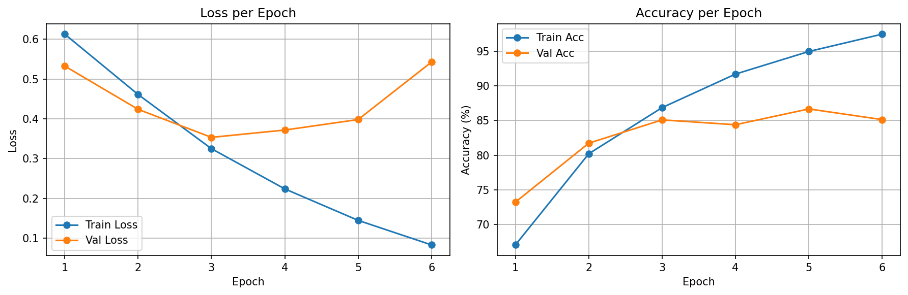
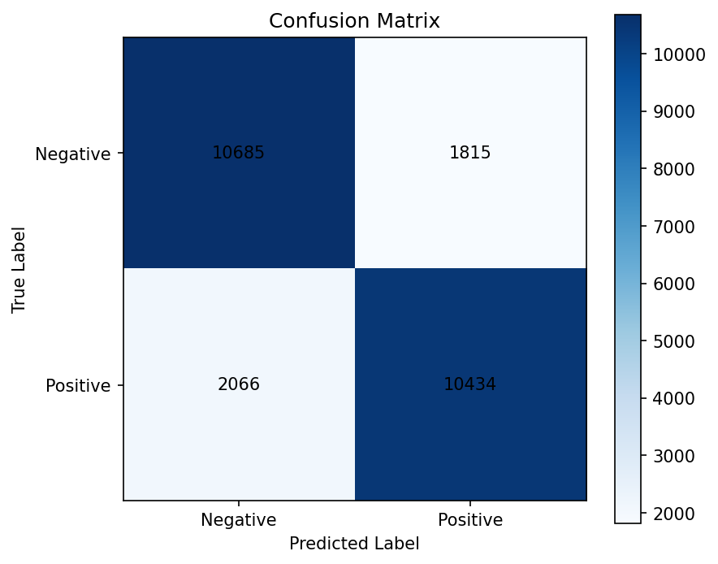

IMDB review classification with a packed LSTM baseline in v1, trainable GloVe embeddings in v2, and frozen GloVe embeddings in v3. This page closes the sequence-modeling story by comparing scratch, pretrained-trainable, and pretrained-frozen word representations.
The vanilla RNN in the Shakespeare project learned formatting and short-range character patterns, but it could not preserve meaning over longer spans. IMDB sentiment classification makes that limitation impossible to ignore: the model must read a full review, keep context alive, and reduce the whole sequence to one final decision.
The Shakespeare model could generate local patterns well, but long-range memory was fragile. That was acceptable for short spelling fragments, but not for review sentiment where phrases like not good, slow at first but worth it, or decent idea, bad execution depend on sequence-level context.
LSTM introduces a cell state and gating mechanism. Instead of forcing one hidden vector to do everything, the model can keep useful information alive longer and update it more selectively. That makes many-to-one review classification much more realistic.
Training uses BCEWithLogitsLoss, and predictions use sigmoid(logits) > 0.5.
This ended up being the most important implementation lesson of the project. The first naive version took the final hidden state after feeding a fully padded review through the LSTM. That meant short reviews were summarized after many meaningless padding steps.
Use the final hidden state after a globally padded sequence of length 256. Result: near-random performance around 51% test accuracy.
Switch to pack_padded_sequence so the LSTM ignores padded timesteps. Result: the model now summarizes the review after the final real word.
Add dynamic batch trimming in the collate_fn. Each batch is cut to its own longest real review instead of always computing all 256 steps.
The big takeaway: in sequence models, padding is not just formatting. If handled carelessly, it can directly damage the representation the classifier depends on.
| Version | Main Change | Best Val Acc | Test Acc | Interpretation |
|---|---|---|---|---|
| v1 | Learn embeddings from scratch | 83.08% | 81.91% | Packed sequences made the baseline viable |
| v2_glove | Initialize embeddings from pretrained GloVe | 86.68% | 84.48% | Better word representations improved early learning and final accuracy |
| v3_glove_frozen | Keep the same GloVe vectors frozen | 84.96% | 83.62% | Pretrained features help, but fine-tuning still works better |
This comparison is intentionally fair: same split, same sequence length, same hidden size, same optimizer, same learning rate, and the same EPOCHS=15 / PATIENCE=3. The only experiment axis in v2/v3 is what happens to the GloVe embedding layer after initialization.
The final takeaway is clean: frozen GloVe still beats the scratch baseline, but trainable GloVe gives the strongest result overall.


| Cell | Count |
|---|---|
| True Negative | 10,685 |
| False Positive | 1,815 |
| False Negative | 2,066 |
| True Positive | 10,434 |
The key shift from v1 to v2 is that false positives fall from 2,512 to 1,815. In v3, they fall a bit further to 1,707, but false negatives rise to 2,387. That means freezing GloVe makes the model more conservative, which is useful to see but not the best overall tradeoff.
False positives still exist, but in v2 they are more concentrated in genre-heavy action or franchise reviews where local praise language is strong even though the final judgment is negative.
False negatives stand out more clearly in formal, socially serious, or thematically heavy reviews whose wording feels negative even when the final verdict is positive. v3 reinforces this pattern even more, which fits the idea that frozen embeddings adapt less well to subtle task-specific sentiment cues.
Negative reviews predicted as positive. These usually contain local praise or genre enthusiasm that seems to outweigh the final negative judgment.
Excerpt: "if you haven't enjoyed a van damme movie ... you probably will not like this movie ... i enjoy these kinds ..."
Excerpt: "has made some of the best western martial arts action movies ever produced ... action classics ... real passion for ..."
Excerpt: "was a decent film, but i have a few issues with this film ... i have a problem with ..."
Positive reviews predicted as negative. These often use formal, socially serious, or thematically heavy wording even though the final evaluation is favorable.
Excerpt: "overall, a well done movie ... i came away with something more than i gone in with ..."
Excerpt: "it is an amazing film because it dares to investigate the hypocrisy ... concerning their women and sexuality ..."
Excerpt: "the theme is controversial ... lack of continuity and lack of ..."
| Parameter | Value | Why |
|---|---|---|
| Vocabulary Size | 25,000 + 2 special tokens | Large enough to cover common review language while staying manageable |
| Max Length | 256 tokens | Reasonable ceiling for an educational baseline |
| Embedding Dim | 100 | Good compromise, and it matches the pretrained GloVe 100d vectors used in v2 |
| Hidden Size | 256 | Enough capacity for sequence classification without making v1 too heavy |
| Batch Size | 64 | Stable and consistent with previous projects |
| Optimizer | Adam (lr=0.001) | Reliable baseline optimizer for NLP classification |
| Early Stopping | patience=3 | Good balance between fair comparison and avoiding wasted epochs |
Character one-hot encoding was acceptable when the vocabulary was only 65 symbols. Word-level NLP changes the scale completely. A 25k-word vocabulary makes one-hot vectors huge and inefficient, so nn.Embedding is the natural next step.
One-hot is like giving each word a locker number. Embeddings are like giving each word a meaningful coordinate in a semantic map, where similar words can move closer together.
The review classifier needs word-level information, not just token identity. Learned embeddings let the model build a useful representation of review language directly from the IMDB dataset.
A vanilla RNN has just one running state. An LSTM carries both a hidden state and a cell state. The cell state is what gives the architecture a more stable memory path across longer sequences.
For sequence classification, the final hidden state becomes the review summary vector. The cell state is not directly used as output, but it helps the model maintain context more effectively while reading the review.
The model outputs one logit per review. That logit is converted to a probability with sigmoid during evaluation, and BCEWithLogitsLoss handles the stable binary-loss computation during training.
This is the first project in the series that uses binary classification rather than multi-class argmax prediction. That shift is part of the conceptual jump from previous CNN projects.
pack_padded_sequence removes the padded tail from the LSTM's computation path. That matters because the final hidden state should summarize the last real word, not a long tail of meaningless padding tokens.
Without packing, the model reads the review and then flips through dozens of blank pages before writing its final summary. Packing makes it stop reading at the true end of the review.
This single change rescued the baseline from near-random behavior to a usable result above 81% test accuracy. It was not a small optimization; it was a correctness fix.
The dataset is still stored at max length 256 for simplicity, but each batch is trimmed to its longest real review inside the custom collate_fn. This keeps the code simple while reducing wasted embedding/LSTM work.
It complements packed sequences nicely: dynamic padding removes batch-level waste, and packing removes sample-level padding inside that batch.
v2 keeps the same LSTM classifier but changes how the embedding layer starts. Instead of learning every word representation from scratch, it loads GloVe vectors for the words it can match and leaves the rest random.
GloVe matched 15,814 of the 25,002 vocabulary entries (63.25%). That was enough to improve early learning and raise test accuracy from 81.91% to 84.48% without changing the rest of the architecture.
| Project | Domain | Key Metric | Architecture Highlight |
|---|---|---|---|
| 1. MNIST CNN | Image Classification | 99.35% acc | Conv + Pool + FC basics |
| 2. CIFAR-10 CNN | Image Classification | 81.04% acc | BatchNorm, LR Scheduler, scratch ceiling |
| 3. Transfer Learning | Image Classification | 96.60% acc | ResNet18, freeze/unfreeze, fine-tuning |
| 4. RNN Shakespeare | Text Generation | 6.33 perplexity | Hidden state, BPTT, temperature |
| 5. LSTM Sentiment | Text Classification | 84.48% acc | Word embeddings, packed LSTM, GloVe initialization |
From image classification to sequence generation, then from sequence generation to sequence understanding. Each project responds directly to a limitation exposed by the previous one.
Project 5 now has a clean final story: padding correctness mattered, pretrained embeddings helped, and trainable GloVe beat frozen GloVe. That makes this a strong stopping point for the LSTM project, and the next natural move is Transformer from scratch.